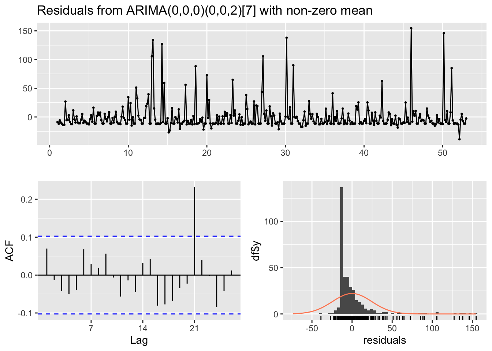
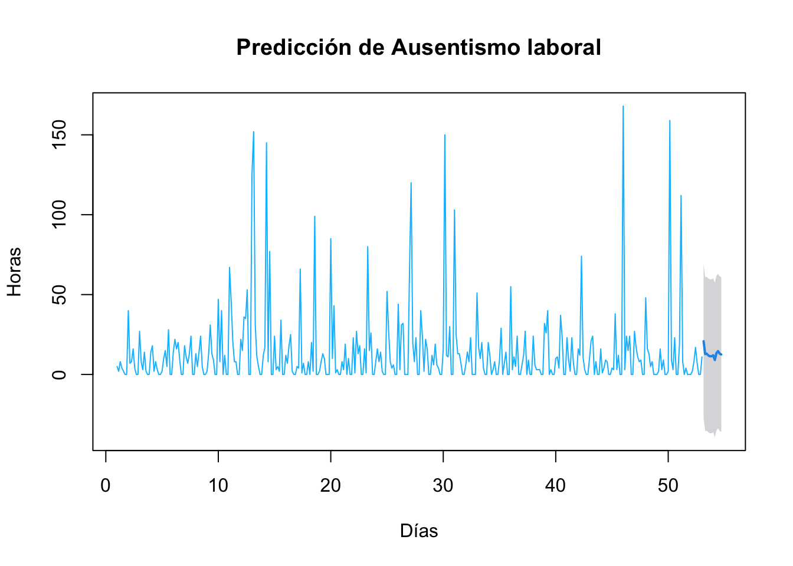
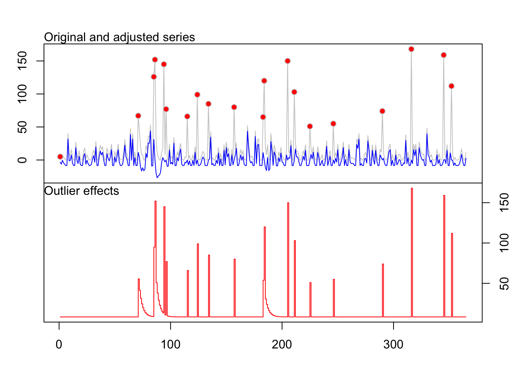

Capítulo 4 Modelo ARIMA
El modelo ARIMA (AutoRegressive Integrated Moving Average) es una herramienta estadística utilizada para modelar y predecir series de tiempo univariadas. Su nombre proviene de los tres componentes principales que lo conforman:
- AR (AutoRegresivo): Indica que la variable dependiente se explica por sus propios valores pasados.
- I (Integrado): Se refiere al número de diferenciaciones necesarias para que la serie se vuelva estacionaria.
- MA (Media Móvil): Representa la dependencia entre el valor actual de la serie y los errores residuales pasados.
El modelo ARIMA se denota como ARIMA (p, d, q), donde:
- p: número de términos autorregresivos (AR).
- d: número de diferencias requeridas para hacer estacionaria la serie.
- q: número de términos de media móvil (MA).
Para que un modelo ARIMA sea válido, es necesario que se cumplan ciertos supuestos fundamentales. En primer lugar, la serie de tiempo debe ser estacionaria, lo que implica que sus propiedades estadísticas, como la media, la varianza y la covarianza, se mantengan constantes a lo largo del tiempo. En caso de que la serie no sea estacionaria, debe poder transformarse en una serie estacionaria mediante procedimientos como la diferenciación. En segundo lugar, se requiere que los residuos del modelo —es decir, las diferencias entre los valores observados y los estimados— se comporten como ruido blanco. Esto significa que deben ser aleatorios, con media cero, varianza constante y sin correlación entre ellos. El cumplimiento de estos supuestos es esencial para garantizar la validez de las inferencias y pronósticos derivados del modelo ARIMA.
Partiendo de los resultado del capítulo 2, se estableció que la serie de tiempo asociada al caso de ausentismo es estacionaria según el resultado del test Dickey-Fuller. A continuación se aplica el modelo Arima
4.1 Generación del modelo
## Series: ts_diaria
## ARIMA(0,0,0)(0,0,2)[7] with non-zero mean
##
## Coefficients:
## sma1 sma2 mean
## 0.0992 0.1259 13.9487
## s.e. 0.0564 0.0534 1.5605
##
## sigma^2 = 603.5: log likelihood = -1685.04
## AIC=3378.08 AICc=3378.19 BIC=3393.68A continuación vamos a explicar los resultados del modelo ARIMA:
ARIMA(0,0,0) → Componente no estacional:
- p=0: no hay términos autorregresivos.
- d=0: no se aplicó diferenciación (la serie ya era estacionaria).
- q=0: no hay términos de media móvil no estacionales.
(0,0,2)[7] → Componente estacional con periodicidad 7 (Días de la semana) indicando un P=0, D=0, Q=2. Es decir, que hay dos términos de media móvil estacional.
- En ese caso el valor 7 indica que se detectó una estacionalidad semanal, común en datos diarios con patrón semanal como el ausentismo laboral.
- with non-zero mean: Indica que el modelo incluye una constante, es decir, la serie tiene una media distinta de cero.
Usando la notación ARIMA el modelo ajustado se puede escribir como:
Yd=0.0992 Yt−1+0.1259 Yt−2+13.9487et−1+E
Este modelo detecta un patrón semanal en la serie de ausentismo, lo que tiene sentido si hay diferencias sistemáticas entre días de la semana (como más ausencias los lunes que los viernes, según lo observado en capítulos anteriores). No se encontraron tendencias o ciclos no estacionales, y la serie fue tratada como estacionaria desde el inicio. Si los residuos del modelo pasan las pruebas de diagnóstico (como Ljung-Box), podría considerarse como un modelo adecuado para pronóstico.
4.2 Análisis de los residuos
Se requiere que los residuos del modelo —es decir, las diferencias entre los valores observados y los estimados— se comporten como ruido blanco. Esto significa que deben ser aleatorios, con media cero, varianza constante y sin correlación entre ellos. El cumplimiento de estos supuestos es esencial para garantizar la validez de las inferencias y pronósticos derivados del modelo ARIMA.
Para comprobar si los residuos de un modelo ARIMA aplicado a ausentismo laboral, se comportan como ruido blanco se grafican los residuos y la función de autocorrelación ACF, como se muestra a continuación.

##
## Ljung-Box test
##
## data: Residuals from ARIMA(0,0,0)(0,0,2)[7] with non-zero mean
## Q* = 9.8081, df = 12, p-value = 0.6328
##
## Model df: 2. Total lags used: 14La función de autocorrelación (ACF): mide la correlación entre una serie de tiempo y sus valores retrasados. La autocorrelacion proporciona información de como una observación del ausentismo influye en las siguientes observaciones. Al trazar esta serie diferenciada, se observa un valor alto en el lag 0, lo cuál es normal pues se compara la serie con sigo misma y se espera que los residuos estén correlacionados con ellos mismos. Para determinar el valor de q en un modelo ARIMA, se puede mirar el gráfico ACF y buscar el primer retraso que tiene una correlación significativa (es decir en donde se sobrepasen las lineas punteadas). En esta grafica se observa un Lag relevante de 21, indicando que hay una correlación significativa entre los valores actuales y los de hace 3 periodos (3 semanas atras). Este valor es interesante y puede estar asociado a la rotación de turnos (diario, tarde, nocturno). En general, esto mostraría que hay información no explicada por el modelo.
Para la validacion del modelo se analiza que los residuos sean Ruido Blanco, es decir, que los residuos se distribuyen normalmente y no hay autocorrelación entre ellos. Para ello, se aplica la prueba de Shapiro para normalidad y la de Ljung-Box para mirar si los residuales cumplen el supuesto de independencia o estan autocorrelacionados
El Q-Q plot muestra que los puntos están dispersos en las colas (por ejemplo, hacia el extremo superior), esto puede implicar que hay más valores extremos de lo que se esperaría bajo una normalidad perfecta, y por ende podría ser una señal de que los residuos no son normales, lo cual puede sugerir que el modelo ARIMA no está capturando completamente la dinámica de la serie temporal y que se podría necesitar ajustes adicionales.
##
## Box-Ljung test
##
## data: resid(modelo_arima)
## X-squared = 7.3853, df = 10, p-value = 0.6886Con la prueba de Ljung-Box, se evalúa si hay o no autocorrelación en los residuos, en este caso aplicada hasta 10 rezagos para que sea más significativa:
- Hipótesis H0: No hay autocorrelación de los residuos
- H1: Existe autocorrelación de los residuos
Como el P-value (0.6886) es mayor a 0.05 no se rechaza H0. En ese caso si se cumple la condición de los residuos son ruido blanco y no muestran autocorrelación significativa, siendo una buena señal de que el modelo ha capturado bien la estructura de la serie hasta los primeros 10 rezago.
4.3 Punto de cambio (AMOC)
A continuación se usa la función cpt.mean() del paquete changepoint en R, específicamente con el método “AMOC” (At Most One Change), para detectar cambios en la media de una serie temporal.
## [1] 63El resultado muestra que la serie ts_diaria tiene una ruptura (cambio estructural) en el valor medio en el dato número 63. Esto sugiere que antes y después de ese punto, los valores de la serie tienen medias significativamente diferentes. El método “AMOC” busca una única ruptura (At Most One Change), y detectó que la mejor ubicación para dividir la serie en dos segmentos con medias distintas es en el punto 63. A continuación se gráfica el resultado para ver el punto de ruptura.
La gráfica muestra la serie con una línea vertical en el punto donde ocurre el cambio, y líneas horizontales indicando las medias antes y después. En este caso el valor 63 de la serie corresponde a la fecha: 2007-03-04, indicando un cambio significatoco en este día. Esta información puede ayudar a decidir si necesitas transformar o dividir la serie antes de ajustar un modelo ARIMA.
4.4 Predicción
Estos son los datos de ausentismo laboral proyectados para los siguientes 12 días utilizando el paquete forecast para la serie diaria.
## Point Forecast Lo 95 Hi 95
## 53.14286 20.83206 -27.31579 68.97990
## 53.28571 12.74445 -35.40339 60.89229
## 53.42857 12.98373 -35.16411 61.13157
## 53.57143 11.91021 -36.23764 60.05805
## 53.71429 11.38556 -36.76228 59.53341
## 53.85714 11.38556 -36.76228 59.53341
## 54.00000 12.01959 -36.12825 60.16743
## 54.14286 9.06356 -39.32047 57.44759
## 54.28571 13.35275 -35.03128 61.73677
## 54.42857 14.62271 -33.76131 63.00674
## 54.57143 13.04233 -35.34170 61.42636
## 54.71429 12.51469 -35.86934 60.89871plot(pred, main=" ", ylab="Horas", col="deepskyblue", xlab="Días")
title(main="Predicción de Ausentismo laboral")
En esta grafica se especifica el horizonte de pronóstico de h periodos por delante para que se realicen las predicciones de ausentismo laboral. En este caso correspondiente a 12 días. En una análisis visual inicial, la predicción parace guardar concordancia con el pronóstico del resto de la serie.
A continuación se hace un análisis de los valores atípicos en la serie, para lo cuál se hace uso de la función tso(), que busca outliers que afecten la estructura de la serie, especialmente aquellos que pueden influir negativamente en el ajuste de modelos ARIMA. Identifica:
- AO = Additive Outlier: un valor atípico puntual.
- LS = Level Shift: un cambio repentino y permanente en el nivel de la serie.
- TC = Temporary Change: un cambio brusco pero transitorio.
## Warning in locate.outliers.iloop(resid = resid, pars = pars, cval = cval, :
## stopped when 'maxit.iloop' was reached
## Warning in locate.outliers.iloop(resid = resid, pars = pars, cval = cval, :
## stopped when 'maxit.iloop' was reached## Warning in locate.outliers.oloop(y = y, fit = fit, types = types, cval = cval,
## : stopped when 'maxit.oloop = 4' was reached
En el gráfico se observa:
- Línea gris: serie original (ts_diaria), sin ajuste.
- Línea azul: serie ajustada tras identificar y corregir los outliers.
- Puntos rojos: valores atípicos detectados (tipos como AO, LS o TC).
En general se observa que hay múltiples picos atípicos detectados a lo largo de la serie, donde los puntos rojos indican que en esos días hubo valores que no siguen el comportamiento esperado por el modelo ARIMA. Estos valores han sido ajustados en la línea azul, suavizando la serie. Esto indica que la serie contiene eventos que podrían ser anómalos, errores de registro, o situaciones excepcionales (como ausencias masivas, festivos especiales, etc.).
En el gráfico inferior se observa que varios outliers tienen efectos importantes y persistentes (altas barras).Esos valores distorsionan la dinámica general de la serie y deben considerarse al ajustar o interpretar un modelo de predicción.
4.5 Conclusiones
El modelo ARIMA es una herramienta fundamental para el análisis de series temporales, ya que permite modelar y pronosticar variables que presentan patrones a lo largo del tiempo. Su estructura flexible, basada en componentes autorregresivos, de media móvil y diferenciación, lo hace adaptable a diversas situaciones. En este caso el ausentismo laboral no ocurre de forma aleatoria: puede estar influido por factores cíclicos, estacionales, o por comportamientos repetitivos a lo largo del tiempo (como más ausencias en invierno o al final de mes). El modelo permite capturar tendencias subyacentes, fluctuaciones cíclicas y dinámicas pasadas de manera efectiva, lo cual es crucial para comprender el comportamiento histórico de una variable y anticipar su evolución futura, se proyecta el futuro de manera cuantitativa y con intervalos de confianza, esto es crucial para anticipar cuándo se dará mayor ausentismo, preparar recursos humanos o personal de reemplazo y tomar decisiones de planificación con tiempo. Acá el modelo ARIMA es importante porque transforma los datos históricos de ausentismo en información procesable, predicciones útiles y mejoras en las decisiones organizacionales, pues permite entender la evolución del ausentismo y actuar antes de que afecte la operación de la empresa. En términos generales, el modelo ARIMA reduce la incertidumbre, optimiza recursos y mejora la eficiencia operativa, convirtiéndose en un aliado estratégico en entornos donde el tiempo y la previsión son factores críticos.